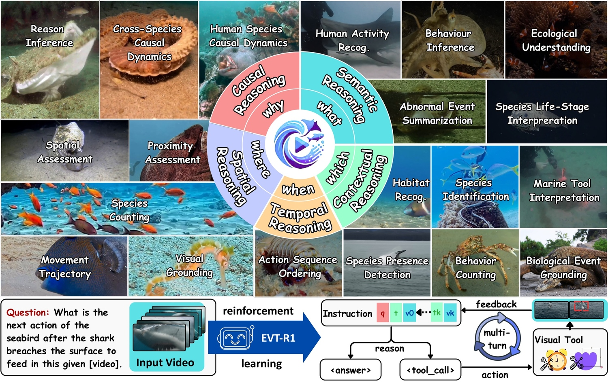

Project spotlight MarineEVT & EVT-R1
RESEARCH DIRECTION 01
Intelligent Ocean Observation & Understanding
Connect visual, acoustic and environmental observations with marine AI to understand the ocean across space and time.
- Marine foundation models
- Computer vision & multimodal sensing
- 3D/4D mapping
- Persistent ocean observation